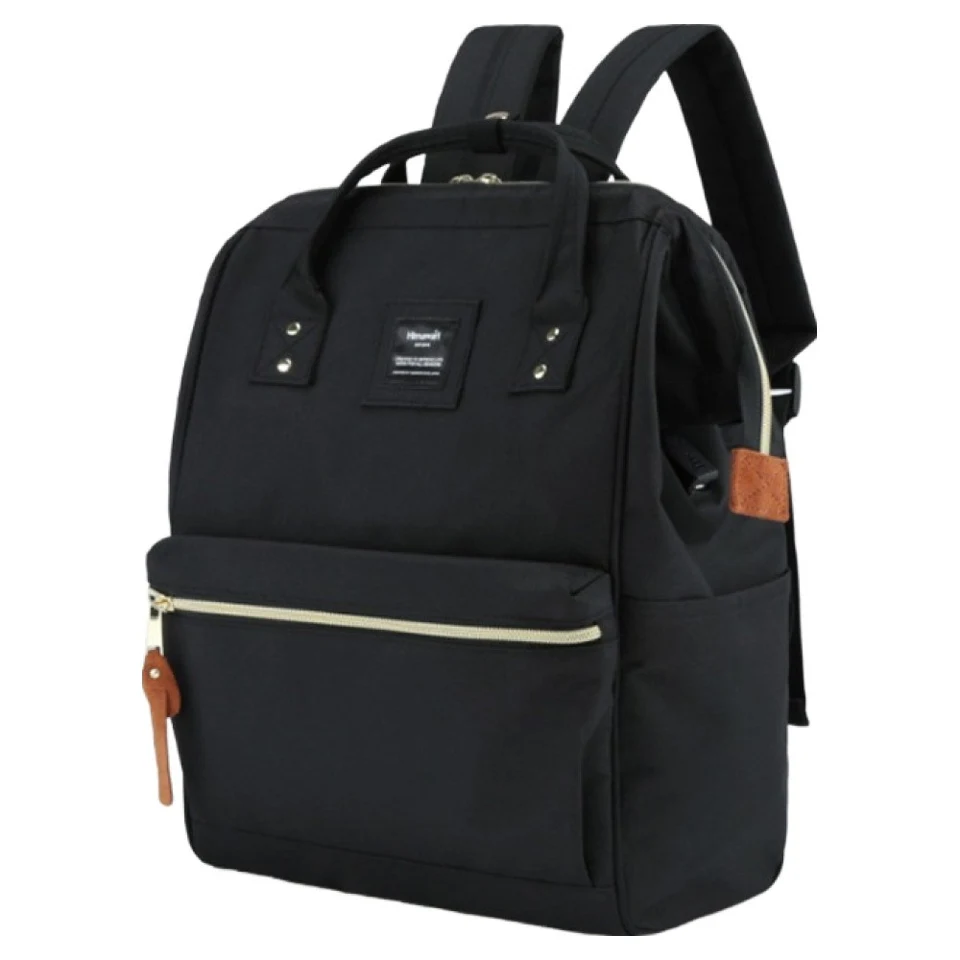
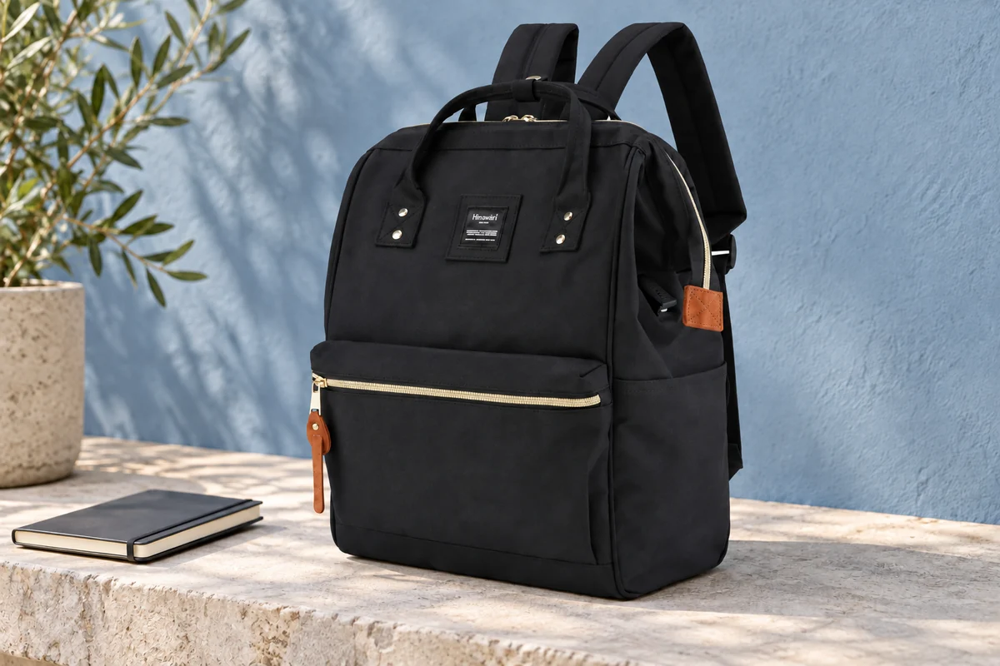

백팩 후기의 평가를 내 사용 조건으로 읽기

백팩 후기를 읽으면 같은 제품에 크다는 말과 작다는 말이 함께 나올 수 있습니다. 서로 다른 짐과 기대를 가진 사람의 평가라면 두 표현이 동시에 남을 수 있습니다. 별점은 읽을 후기를 찾는 출발점으로 쓰고, 선택에 필요한 것은 자신의 조건과 비교할 설명에서 고릅니다. 누구의 판단이 맞는지 먼저 정하기보다 그 판단이 나온 장면을 찾아 읽는 방식입니다.
같은 모델과 옵션의 이야기인지
리뷰에 적힌 구매 상품명과 모델, 크기 옵션, 색상부터 봅니다. 비슷한 번호의 제품이나 같은 모델의 다른 구성이 함께 표시될 수 있습니다. 사진의 색만 보고 지금 선택한 옵션과 같다고 판단하지 않고 표시된 옵션과 현재 제품 정보를 나란히 읽습니다. 그 정보가 없는 후기에서는 확인할 수 있는 범위를 그대로 둡니다. 후기 화면에 나온다는 이유만으로 구매 확인이나 현재 사양이 모두 같다고 단정하지 않습니다.
다른 판매 채널의 리뷰를 읽는 경우에는 출처와 구매 당시 판매 정보가 있는지 살펴봅니다. 지금 보고 있는 제품 페이지의 옵션과 어떤 관계인지 알 수 있어야 비교할 수 있습니다. 이름이 같아도 자료의 날짜가 다르면 구성이 달라졌는지 물어볼 항목이 생길 수 있습니다. 확인되지 않은 차이는 기억으로 맞추지 않고 현재 판매 정보에서 필요한 것을 따로 확인합니다.
받은 직후의 글인지 사용 기간을 밝힌 글인지도 구별합니다. 포장과 처음 본 외형에 관한 설명은 실제 사용을 오래 했다는 기록과 같은 범위가 아닙니다. 기간이 표시되어 있어도 자신의 사용 조건과 같은지 더 봅니다. 후기가 어떤 질문에 답할 수 있는지 읽으면 모든 글에서 같은 정보를 요구하지 않아도 됩니다. 기간이 없다는 이유로 내용을 만들거나 쓰는 사람의 경험을 추측할 필요는 없습니다.
평가 표현 옆의 구체적인 물건
크다거나 작다는 말 옆에 어떤 파일과 파우치를 넣었는지 설명이 있는지 봅니다. 실제 물건의 크기와 보호재, 짐 구성까지 적혀 있으면 자신의 조건과 비교할 단서가 많아집니다. 그렇다고 다른 사람이 넣었다는 설명만으로 자기 기기 적합성을 확정하지 않습니다. 필요한 실측값은 현재 제품 정보에서 확인하고, 후기는 무엇을 더 물어볼지 정하는 자료로 사용할 수 있습니다.
편하다는 평가도 어느 순간의 이야기인지 봅니다. 짧은 이동에서 들었는지, 물건을 자주 꺼내는 동안 썼는지에 따라 연결할 질문이 다릅니다. 제품 자체에 대한 경험과 배송이나 상담 과정에 대한 경험도 나누어 읽습니다. 배송이 빨랐다는 설명을 수납 구조의 장점으로 옮기거나, 상담의 아쉬움을 제품 크기 정보처럼 읽지 않으면 필요한 사실을 고르기 쉽습니다.
Himawari No.9001의 후기를 살펴볼 때에도 현재 고른 옵션을 먼저 정하고 자기 질문을 붙입니다. 가지고 있는 노트나 기기가 들어가는지 궁금하다면 그 물건의 실제 구성부터 준비합니다. 후기에서 언급한 다른 물건을 자기 것과 같은 크기로 가정하기보다 무엇이 아직 남은 질문인지 읽습니다. 모델이 맞는 제품 정보를 곁에 두면 평가 문장과 사양을 구별할 기준이 생깁니다.

사진의 단서와 문장의 범위
리뷰 사진에서는 실제로 보이는 위치와 대략적인 사용 배치를 살펴볼 수 있습니다. 촬영 각도와 조명, 화면에 따라 색과 크기의 인상이 달라질 수 있으므로 한 장을 기준으로 숫자를 만들어내지 않습니다. 원단의 성능이나 오래 사용했을 때의 내구성도 외관만으로 결론 내리기 어렵습니다. 문장에 사용 조건이 적혀 있다면 사진과 연결해 읽되 보이지 않는 내부 구조까지 추정하지 않습니다.
체험이나 무료 제공에 관한 안내가 있으면 그 조건도 함께 읽습니다. 표시가 있다는 사실과 내용의 어느 부분을 참고할지는 각자의 질문을 기준으로 판단합니다. 같은 문장이 여러 후기에서 반복되는 경우에도 서로 다른 경험이라고 바로 셀 필요는 없습니다. 실제로 다른 조건과 구체적인 물건이 설명되어 있는지 봅니다. 근거 없는 진위 판정이나 작성자의 의도를 추측하는 일보다 비교할 정보를 고르는 데 집중합니다.
평가가 서로 다를 때에는 조건을 나누어 개인 메모에 적을 수 있습니다. 다음 구분은 실제 고객 발언을 옮긴 표가 아니라 후기를 읽으며 만들 질문의 예입니다.
| 후기에서 본 항목 | 함께 읽을 단서 | 내가 추가로 확인할 질문 |
|---|---|---|
| 크기에 대한 인상 | 옵션과 넣은 물건 | 내 소지품과 내부 공간의 실제 크기 |
| 꺼내기 편한 구성 | 사용한 포켓과 사용 장면 | 내가 자주 꺼낼 물건의 위치 |
| 처음 받은 상태 | 촬영 시점과 구성 표시 | 현재 판매 옵션의 구성 |
마지막에 남길 것은 질문 목록
높은 별점과 낮은 별점 가운데 자기 사용과 관련 있는 구체적인 설명을 고릅니다. 같은 조건에서 반복되는 관찰이 있으면 추가로 확인할 항목으로 남깁니다. 별점 수를 더하는 방식으로 실제 크기나 기능을 정하지 않습니다. ‘현재 옵션의 구성은 무엇인가’, ‘내 파일을 넣은 상태에서 닫을 수 있는가’처럼 제품 정보나 문의로 답을 받을 질문을 정리하면 다음 단계가 분명해집니다.
질문에 답을 얻은 뒤에는 그것이 어느 모델과 옵션의 정보인지 함께 남깁니다. 후기에서 읽은 인상과 공식 안내에서 확인한 수치를 한 문장으로 섞지 않고 각각 보관합니다. 아직 답이 없는 부분이 선택에 중요하다면 확인을 이어갑니다. 여러 사람의 경험을 충분히 읽어도 자신의 물건과 사용 장면이 마지막 기준으로 남아 있어야 합니다. 후기 목록을 닫을 때 무엇을 더 확인할지 알 수 있으면 읽은 시간이 선택으로 이어집니다.